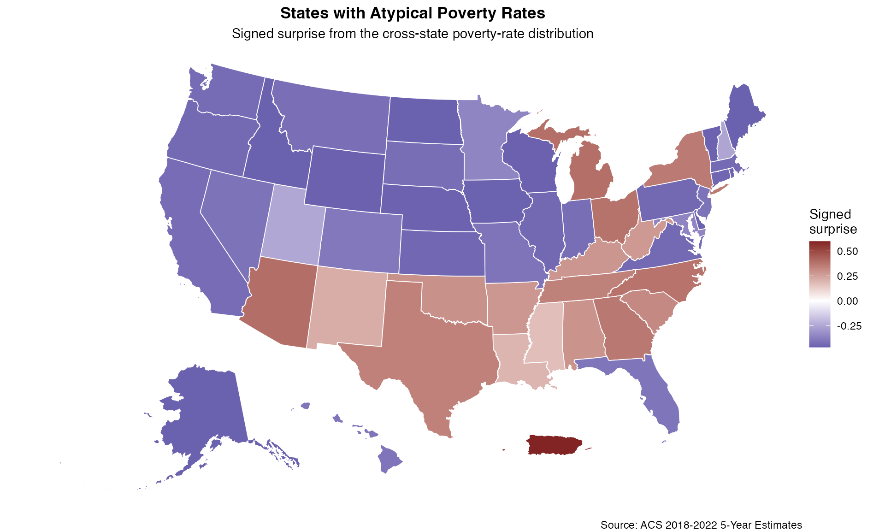
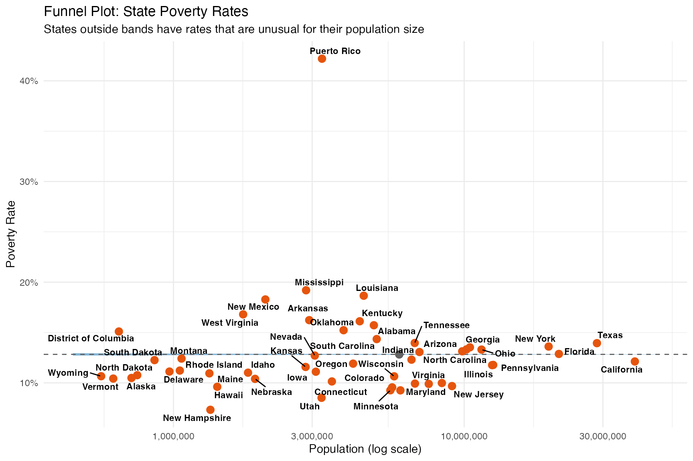
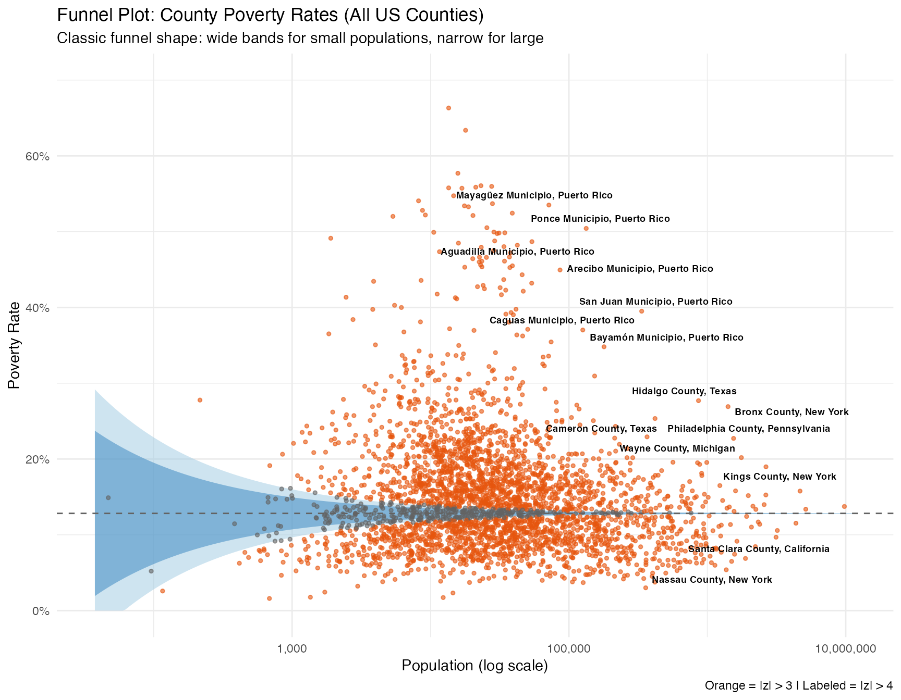
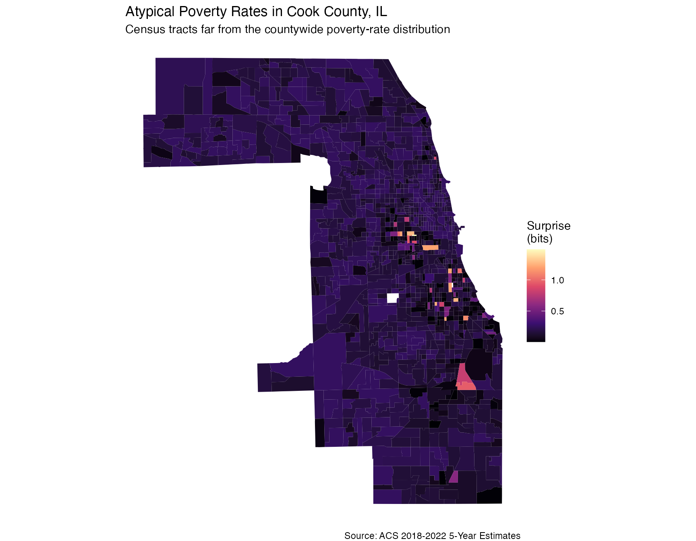
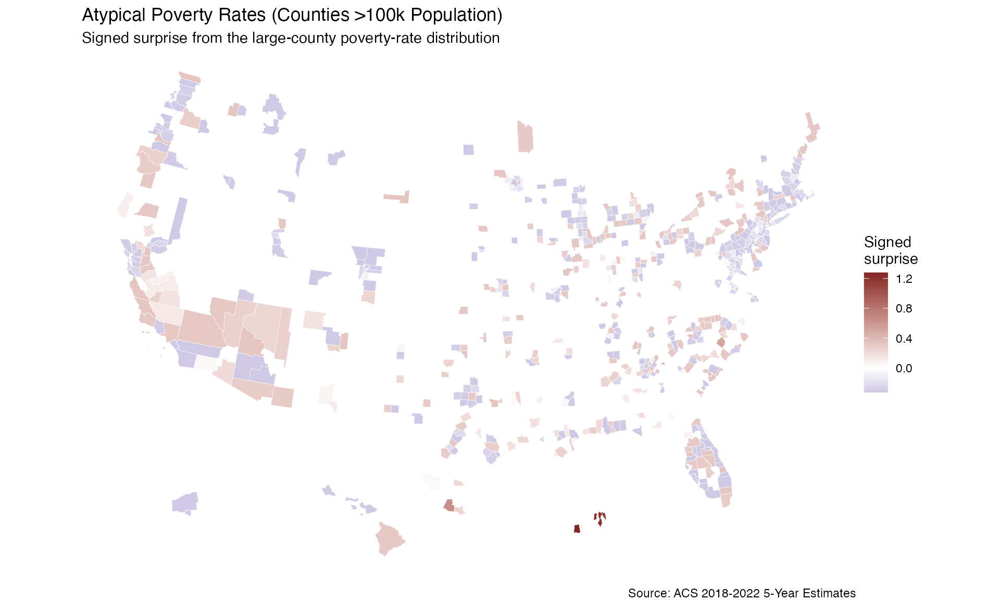

Bayesian Surprise with US Census Data (tidycensus)
Source:vignettes/tidycensus-workflow.Rmd
tidycensus-workflow.RmdIntroduction
This vignette demonstrates how to use the
bayesiansurpriser package with US Census data accessed
through the tidycensus package.
Important: Bayesian Surprise is conditional on the model space you choose. For count/exposure data, population size can strongly affect the posterior model update because sampling variation is much smaller in large populations than in small populations. Compare results against the raw rate and a funnel plot before interpreting a map.
When to Use Bayesian Surprise
The examples below are most interpretable for:
- State-level comparisons where populations are more similar
- Counties within a single state (similar geographic scale)
- Census tracts within a metro area (similar population sizes)
- Any dataset where populations do not span orders of magnitude
Prerequisites
You’ll need a Census API key from https://api.census.gov/data/key_signup.html
library(bayesiansurpriser)
library(tidycensus)
library(tigris)
library(sf)
library(ggplot2)
library(dplyr)
# Set your Census API key (do this once)
# census_api_key("YOUR_KEY_HERE", install = TRUE)Example 1: State-Level Poverty Analysis
State-level analysis is a useful starting point because state populations are more comparable than county populations (ranging from ~580K to ~39M, about 2 orders of magnitude).
# Get state-level poverty data
state_poverty <- get_acs(
geography = "state",
variables = c(
total_pop = "B17001_001",
in_poverty = "B17001_002"
),
year = 2022,
survey = "acs5",
geometry = TRUE,
output = "wide"
)
#> | | | 0% | | | 1% | |= | 1% | |= | 2% | |== | 3% | |=== | 4% | |=== | 5% | |==== | 5% | |==== | 6% | |===== | 6% | |===== | 7% | |===== | 8% | |====== | 9% | |======= | 10% | |======= | 11% | |======== | 11% | |======== | 12% | |========= | 13% | |========= | 14% | |========== | 14% | |========== | 15% | |=========== | 15% | |=========== | 16% | |============ | 17% | |============ | 18% | |============= | 18% | |============= | 19% | |============== | 20% | |============== | 21% | |=============== | 21% | |=============== | 22% | |================ | 23% | |================= | 24% | |================= | 25% | |================== | 25% | |================== | 26% | |=================== | 27% | |=================== | 28% | |==================== | 28% | |==================== | 29% | |===================== | 30% | |===================== | 31% | |====================== | 31% | |====================== | 32% | |======================= | 32% | |======================= | 33% | |======================== | 34% | |======================== | 35% | |========================= | 35% | |========================= | 36% | |========================== | 37% | |========================== | 38% | |=========================== | 38% | |=========================== | 39% | |============================ | 40% | |============================= | 41% | |============================= | 42% | |============================== | 42% | |============================== | 43% | |=============================== | 44% | |=============================== | 45% | |================================ | 45% | |================================ | 46% | |================================= | 47% | |================================= | 48% | |================================== | 48% | |================================== | 49% | |=================================== | 49% | |=================================== | 50% | |==================================== | 51% | |==================================== | 52% | |===================================== | 52% | |===================================== | 53% | |====================================== | 54% | |====================================== | 55% | |======================================= | 55% | |======================================= | 56% | |======================================== | 57% | |========================================= | 58% | |========================================= | 59% | |========================================== | 59% | |========================================== | 60% | |=========================================== | 61% | |=========================================== | 62% | |============================================ | 62% | |============================================ | 63% | |============================================= | 64% | |============================================= | 65% | |============================================== | 65% | |============================================== | 66% | |=============================================== | 66% | |=============================================== | 67% | |================================================ | 68% | |================================================ | 69% | |================================================= | 69% | |================================================= | 70% | |================================================= | 71% | |================================================== | 71% | |================================================== | 72% | |=================================================== | 73% | |=================================================== | 74% | |==================================================== | 74% | |==================================================== | 75% | |===================================================== | 75% | |===================================================== | 76% | |====================================================== | 77% | |====================================================== | 78% | |======================================================= | 78% | |======================================================= | 79% | |======================================================== | 80% | |======================================================== | 81% | |========================================================= | 81% | |========================================================= | 82% | |========================================================== | 83% | |=========================================================== | 84% | |=========================================================== | 85% | |============================================================ | 85% | |============================================================ | 86% | |============================================================= | 87% | |============================================================= | 88% | |============================================================== | 88% | |============================================================== | 89% | |=============================================================== | 90% | |=============================================================== | 91% | |================================================================ | 91% | |================================================================ | 92% | |================================================================= | 92% | |================================================================= | 93% | |================================================================== | 94% | |================================================================== | 95% | |=================================================================== | 95% | |=================================================================== | 96% | |==================================================================== | 97% | |==================================================================== | 98% | |===================================================================== | 98% | |===================================================================== | 99% | |======================================================================| 100%
state_poverty <- state_poverty %>%
filter(!is.na(in_povertyE) & !is.na(total_popE)) %>%
filter(total_popE > 0) %>%
mutate(poverty_rate = in_povertyE / total_popE)
# Compute surprise
state_surprise <- surprise(
state_poverty,
observed = in_povertyE,
expected = total_popE,
models = c("uniform", "baserate", "funnel")
)
# View results
cat("Surprise value range:", round(range(state_surprise$surprise), 4), "\n")
#> Surprise value range: 0.5825 0.6463
# States with positive signed surprise
state_surprise %>%
st_drop_geometry() %>%
filter(signed_surprise > 0) %>%
arrange(desc(surprise)) %>%
select(NAME, poverty_rate, total_popE, surprise, signed_surprise) %>%
head(10)
#> Bayesian Surprise Map
#> =====================
#>
#> NAME poverty_rate total_popE surprise signed_surprise
#> 1 Puerto Rico 0.4219536 3242916 0.6463130 0.6463130
#> 2 Louisiana 0.1865478 4513793 0.5873839 0.5873839
#> 3 Mississippi 0.1919688 2858819 0.5867757 0.5867757
#> 4 New Mexico 0.1828379 2070966 0.5858975 0.5858975
#> 5 Kentucky 0.1611705 4372749 0.5856562 0.5856562
#> 6 Alabama 0.1572249 4890427 0.5855557 0.5855557
#> 7 Arkansas 0.1622886 2931377 0.5854563 0.5854563
#> 8 Texas 0.1394442 28615931 0.5854188 0.5854188
#> 9 West Virginia 0.1680366 1736883 0.5853639 0.5853639
#> 10 Oklahoma 0.1522964 3847702 0.5852745 0.5852745
# States with negative signed surprise
state_surprise %>%
st_drop_geometry() %>%
filter(signed_surprise < 0) %>%
arrange(desc(surprise)) %>%
select(NAME, poverty_rate, total_popE, surprise, signed_surprise) %>%
head(10)
#> Bayesian Surprise Map
#> =====================
#>
#> NAME poverty_rate total_popE surprise signed_surprise
#> 1 New Jersey 0.09681402 9081112 0.5864963 -0.5864963
#> 2 Maryland 0.09256503 6034320 0.5862574 -0.5862574
#> 3 Minnesota 0.09262296 5574039 0.5861511 -0.5861511
#> 4 Virginia 0.09984590 8379773 0.5861132 -0.5861132
#> 5 Washington 0.09896392 7553642 0.5860610 -0.5860610
#> 6 Colorado 0.09553819 5653289 0.5859783 -0.5859783
#> 7 Utah 0.08515455 3231630 0.5859547 -0.5859547
#> 8 Massachusetts 0.09928116 6772292 0.5859225 -0.5859225
#> 9 New Hampshire 0.07325118 1340074 0.5856176 -0.5856176
#> 10 Wisconsin 0.10650244 5743164 0.5854223 -0.5854223Visualize State-Level Results
# Shift AK/HI for visualization
state_surprise_shifted <- state_surprise %>%
shift_geometry()
ggplot(state_surprise_shifted) +
geom_sf(aes(fill = signed_surprise), color = "white", linewidth = 0.3) +
scale_fill_gradient2(
low = "#2166ac", mid = "white", high = "#b2182b",
midpoint = 0,
name = "Signed\nSurprise"
) +
labs(
title = "Surprising Poverty Rates by State",
subtitle = "Red = Higher than expected | Blue = Lower than expected",
caption = "Source: ACS 2018-2022 5-Year Estimates"
) +
theme_void() +
theme(
legend.position = "right",
plot.title = element_text(hjust = 0.5, face = "bold"),
plot.subtitle = element_text(hjust = 0.5)
)
Example 2: Funnel Plot Visualization
Funnel plots show how rates vary with population size and provide context for sampling variation.
library(ggrepel)
# Compute funnel data
funnel_df <- compute_funnel_data(
observed = state_poverty$in_povertyE,
sample_size = state_poverty$total_popE,
type = "count",
limits = c(2, 3)
)
funnel_df$state <- state_poverty$NAME
funnel_df$rate <- funnel_df$observed / funnel_df$sample_size
# National rate
national_rate <- sum(state_poverty$in_povertyE) / sum(state_poverty$total_popE)
# Create funnel bands
n_range <- range(state_poverty$total_popE)
n_seq <- exp(seq(log(n_range[1] * 0.8), log(n_range[2] * 1.2), length.out = 200))
se_seq <- sqrt(national_rate * (1 - national_rate) / n_seq)
funnel_bands <- data.frame(
n = n_seq,
lower_2sd = national_rate - 2 * se_seq,
upper_2sd = national_rate + 2 * se_seq,
lower_3sd = national_rate - 3 * se_seq,
upper_3sd = national_rate + 3 * se_seq
)
# Plot
ggplot() +
geom_ribbon(
data = funnel_bands,
aes(x = n, ymin = lower_3sd, ymax = upper_3sd),
fill = "#9ecae1", alpha = 0.5
) +
geom_ribbon(
data = funnel_bands,
aes(x = n, ymin = lower_2sd, ymax = upper_2sd),
fill = "#3182bd", alpha = 0.5
) +
geom_hline(yintercept = national_rate, linetype = "dashed", color = "#636363") +
geom_point(
data = funnel_df,
aes(x = sample_size, y = rate, color = abs(z_score) > 2),
size = 3
) +
geom_text_repel(
data = funnel_df %>% filter(abs(z_score) > 2),
aes(x = sample_size, y = rate, label = state),
size = 3, fontface = "bold"
) +
scale_color_manual(values = c("FALSE" = "#636363", "TRUE" = "#e6550d"), guide = "none") +
scale_x_log10(labels = scales::comma) +
scale_y_continuous(labels = scales::percent) +
labs(
title = "Funnel Plot: State Poverty Rates",
subtitle = "States outside bands have rates that are unusual for their population size",
x = "Population (log scale)",
y = "Poverty Rate"
) +
theme_minimal()
Why doesn’t this look like a funnel? State populations only span ~2 orders of magnitude (580K to 39M). At these large sample sizes, standard errors are tiny and nearly identical, so the control bands appear as horizontal lines. We’re seeing only the narrow right edge of what would be a funnel.
County-Level Funnel (Classic Shape)
To see a true funnel, we need data spanning many orders of magnitude. US counties range from ~50 to ~10 million people, making the changing uncertainty bands easy to see.
# Get all county poverty data (no geometry needed for funnel plot)
county_poverty_all <- get_acs(
geography = "county",
variables = c(
total_pop = "B17001_001",
in_poverty = "B17001_002"
),
year = 2022,
survey = "acs5",
output = "wide"
) %>%
filter(!is.na(in_povertyE) & !is.na(total_popE)) %>%
filter(total_popE > 0) %>%
mutate(poverty_rate = in_povertyE / total_popE)
cat("County population range:", format(range(county_poverty_all$total_popE), big.mark = ","), "\n")
#> County population range: 47 9,782,602
cat("Number of counties:", nrow(county_poverty_all), "\n")
#> Number of counties: 3222
# National rate from county data
national_rate_county <- sum(county_poverty_all$in_povertyE) / sum(county_poverty_all$total_popE)
# Compute funnel data
county_funnel <- compute_funnel_data(
observed = county_poverty_all$in_povertyE,
sample_size = county_poverty_all$total_popE,
type = "count",
limits = c(2, 3)
)
county_funnel$name <- county_poverty_all$NAME
county_funnel$rate <- county_funnel$observed / county_funnel$sample_size
# Create funnel bands across full range
n_range_county <- range(county_poverty_all$total_popE)
n_seq_county <- exp(seq(log(n_range_county[1] * 0.8), log(n_range_county[2] * 1.2), length.out = 300))
se_seq_county <- sqrt(national_rate_county * (1 - national_rate_county) / n_seq_county)
county_bands <- data.frame(
n = n_seq_county,
lower_2sd = national_rate_county - 2 * se_seq_county,
upper_2sd = national_rate_county + 2 * se_seq_county,
lower_3sd = national_rate_county - 3 * se_seq_county,
upper_3sd = national_rate_county + 3 * se_seq_county
)
# Identify extreme outliers for labeling
extreme_counties <- county_funnel %>%
filter(abs(z_score) > 4) %>%
arrange(desc(abs(z_score))) %>%
head(15)
# Plot
ggplot() +
geom_ribbon(
data = county_bands,
aes(x = n, ymin = pmax(lower_3sd, 0), ymax = pmin(upper_3sd, 1)),
fill = "#9ecae1", alpha = 0.5
) +
geom_ribbon(
data = county_bands,
aes(x = n, ymin = pmax(lower_2sd, 0), ymax = pmin(upper_2sd, 1)),
fill = "#3182bd", alpha = 0.5
) +
geom_hline(yintercept = national_rate_county, linetype = "dashed", color = "#636363") +
geom_point(
data = county_funnel,
aes(x = sample_size, y = rate, color = abs(z_score) > 3),
size = 1, alpha = 0.6
) +
geom_text_repel(
data = extreme_counties,
aes(x = sample_size, y = rate, label = name),
size = 2.5, fontface = "bold", max.overlaps = 20
) +
scale_color_manual(values = c("FALSE" = "#636363", "TRUE" = "#e6550d"), guide = "none") +
scale_x_log10(labels = scales::comma) +
scale_y_continuous(labels = scales::percent, limits = c(0, 0.7)) +
labs(
title = "Funnel Plot: County Poverty Rates (All US Counties)",
subtitle = "Classic funnel shape: wide bands for small populations, narrow for large",
x = "Population (log scale)",
y = "Poverty Rate",
caption = "Orange = |z| > 3 | Labeled = |z| > 4"
) +
theme_minimal()
Key insight: Small counties (left side) have wide control bands - rates from 5% to 25% are all “expected” given sampling variation. Large counties (right side) have narrow bands, so smaller deviations from ~13% can strongly update the model posterior.
This explains why Bayesian Surprise can differ from a rate map: - A small county with an extreme rate may still be plausible under a sampling-variation model. - A large county with a modest rate difference can produce a strong model update because its sampling variation is small.
Example 3: Tract-Level Analysis (Same-Scale Comparison)
Census tracts within a metro area have similar populations (~2,000-8,000), making the model comparison easier to interpret than an all-county national map.
# Get tract-level data for Cook County (Chicago)
chicago_tracts <- get_acs(
geography = "tract",
state = "IL",
county = "Cook",
variables = c(
total_pop = "B17001_001",
in_poverty = "B17001_002"
),
year = 2022,
survey = "acs5",
geometry = TRUE,
output = "wide"
)
#> | | | 0% | |= | 1% | |== | 2% | |== | 3% | |=== | 4% | |==== | 5% | |===== | 7% | |===== | 8% | |====== | 9% | |======= | 10% | |======== | 11% | |======== | 12% | |========= | 13% | |========== | 14% | |=========== | 15% | |=========== | 16% | |============ | 18% | |============= | 19% | |============== | 20% | |=============== | 21% | |=============== | 22% | |================ | 23% | |================= | 24% | |================== | 25% | |================== | 26% | |=================== | 27% | |==================== | 28% | |===================== | 30% | |===================== | 31% | |====================== | 32% | |======================= | 33% | |======================== | 34% | |========================= | 35% | |========================= | 36% | |========================== | 37% | |=========================== | 38% | |============================ | 39% | |============================ | 40% | |============================= | 42% | |============================== | 43% | |=============================== | 44% | |=============================== | 45% | |================================ | 46% | |================================= | 47% | |================================== | 48% | |================================== | 49% | |=================================== | 50% | |==================================== | 51% | |===================================== | 53% | |====================================== | 54% | |====================================== | 55% | |======================================= | 56% | |======================================== | 57% | |========================================= | 58% | |========================================= | 59% | |========================================== | 60% | |=========================================== | 61% | |============================================ | 62% | |============================================ | 63% | |============================================= | 65% | |============================================== | 66% | |=============================================== | 67% | |================================================ | 68% | |================================================ | 69% | |================================================= | 70% | |================================================== | 71% | |=================================================== | 72% | |=================================================== | 73% | |==================================================== | 74% | |===================================================== | 76% | |====================================================== | 77% | |====================================================== | 78% | |======================================================= | 79% | |======================================================== | 80% | |========================================================= | 81% | |========================================================= | 82% | |========================================================== | 83% | |=========================================================== | 84% | |============================================================ | 85% | |============================================================= | 86% | |============================================================= | 88% | |============================================================== | 89% | |=============================================================== | 90% | |================================================================ | 91% | |================================================================ | 92% | |================================================================= | 93% | |================================================================== | 94% | |=================================================================== | 95% | |=================================================================== | 96% | |==================================================================== | 97% | |===================================================================== | 99% | |======================================================================| 100%
chicago_tracts <- chicago_tracts %>%
filter(!is.na(in_povertyE) & !is.na(total_popE)) %>%
filter(total_popE > 100)
cat("Population range:", range(chicago_tracts$total_popE), "\n")
#> Population range: 306 12213
cat("Number of tracts:", nrow(chicago_tracts), "\n")
#> Number of tracts: 1328
# Compute surprise with a population baseline and sampling-variation model.
chicago_surprise <- surprise(
chicago_tracts,
observed = in_povertyE,
expected = total_popE,
models = c("uniform", "baserate", "funnel")
)
# Plot
ggplot(chicago_surprise) +
geom_sf(aes(fill = signed_surprise), color = NA) +
scale_fill_gradient2(
low = "#2166ac", mid = "white", high = "#b2182b",
midpoint = 0,
name = "Signed\nSurprise"
) +
labs(
title = "Surprising Poverty Patterns in Cook County, IL",
subtitle = "Census Tract Level | Red = Higher | Blue = Lower than expected",
caption = "Source: ACS 2018-2022 5-Year Estimates"
) +
theme_void()
# Largest signed surprise values under this model space
chicago_surprise %>%
st_drop_geometry() %>%
mutate(poverty_rate = in_povertyE / total_popE) %>%
arrange(desc(abs(signed_surprise))) %>%
select(NAME, poverty_rate, total_popE, surprise, signed_surprise) %>%
head(10)
#> Bayesian Surprise Map
#> =====================
#>
#> NAME poverty_rate total_popE
#> 1 Census Tract 8369; Cook County; Illinois 0.7557673 1994
#> 2 Census Tract 2307; Cook County; Illinois 0.4999117 5663
#> 3 Census Tract 8429; Cook County; Illinois 0.6097637 3216
#> 4 Census Tract 5401.01; Cook County; Illinois 0.5336323 4460
#> 5 Census Tract 4008; Cook County; Illinois 0.6361994 2768
#> 6 Census Tract 8368; Cook County; Illinois 0.6394687 2635
#> 7 Census Tract 4314; Cook County; Illinois 0.4406634 6994
#> 8 Census Tract 2518; Cook County; Illinois 0.4703774 5300
#> 9 Census Tract 315.01; Cook County; Illinois 0.4629911 4607
#> 10 Census Tract 3008; Cook County; Illinois 0.4780534 4192
#> surprise signed_surprise
#> 1 0.5862108 0.5862108
#> 2 0.5861431 0.5861431
#> 3 0.5861191 0.5861191
#> 4 0.5860778 0.5860778
#> 5 0.5860741 0.5860741
#> 6 0.5860336 0.5860336
#> 7 0.5859628 0.5859628
#> 8 0.5858809 0.5858809
#> 9 0.5857199 0.5857199
#> 10 0.5857196 0.5857196Example 4: Large Counties Only
When analyzing all US counties, filtering to larger populations gives more interpretable results since the funnel model won’t dominate.
# Get county data
county_poverty <- get_acs(
geography = "county",
variables = c(
total_pop = "B17001_001",
in_poverty = "B17001_002"
),
year = 2022,
survey = "acs5",
geometry = TRUE,
output = "wide"
) %>%
shift_geometry()
#> | | | 0% | | | 1% | |= | 1% | |= | 2% | |== | 2% | |== | 3% | |== | 4% | |=== | 4% | |=== | 5% | |==== | 5% | |==== | 6% | |===== | 6% | |===== | 7% | |===== | 8% | |====== | 8% | |====== | 9% | |======= | 9% | |======= | 10% | |======= | 11% | |======== | 11% | |======== | 12% | |========= | 12% | |========= | 13% | |========== | 14% | |========== | 15% | |=========== | 15% | |=========== | 16% | |============ | 16% | |============ | 17% | |============ | 18% | |============= | 18% | |============= | 19% | |============== | 19% | |============== | 20% | |============== | 21% | |=============== | 21% | |=============== | 22% | |================ | 22% | |================ | 23% | |================= | 24% | |================= | 25% | |================== | 25% | |================== | 26% | |=================== | 27% | |=================== | 28% | |==================== | 28% | |==================== | 29% | |===================== | 29% | |===================== | 30% | |===================== | 31% | |====================== | 31% | |====================== | 32% | |======================= | 32% | |======================= | 33% | |======================== | 34% | |======================== | 35% | |========================= | 35% | |========================= | 36% | |========================== | 37% | |========================== | 38% | |=========================== | 38% | |=========================== | 39% | |============================ | 39% | |============================ | 40% | |============================ | 41% | |============================= | 41% | |============================= | 42% | |============================== | 42% | |============================== | 43% | |============================== | 44% | |=============================== | 44% | |=============================== | 45% | |================================ | 45% | |================================ | 46% | |================================= | 47% | |================================= | 48% | |================================== | 48% | |================================== | 49% | |=================================== | 49% | |=================================== | 50% | |=================================== | 51% | |==================================== | 51% | |==================================== | 52% | |===================================== | 52% | |===================================== | 53% | |===================================== | 54% | |====================================== | 54% | |====================================== | 55% | |======================================= | 55% | |======================================= | 56% | |======================================== | 56% | |======================================== | 57% | |======================================== | 58% | |========================================= | 58% | |========================================= | 59% | |========================================== | 59% | |========================================== | 60% | |========================================== | 61% | |=========================================== | 61% | |=========================================== | 62% | |============================================ | 62% | |============================================ | 63% | |============================================ | 64% | |============================================= | 64% | |============================================= | 65% | |============================================== | 65% | |============================================== | 66% | |=============================================== | 66% | |=============================================== | 67% | |=============================================== | 68% | |================================================ | 68% | |================================================ | 69% | |================================================= | 69% | |================================================= | 70% | |================================================= | 71% | |================================================== | 71% | |================================================== | 72% | |=================================================== | 72% | |=================================================== | 73% | |=================================================== | 74% | |==================================================== | 74% | |==================================================== | 75% | |===================================================== | 75% | |===================================================== | 76% | |====================================================== | 76% | |====================================================== | 77% | |====================================================== | 78% | |======================================================= | 78% | |======================================================= | 79% | |======================================================== | 79% | |======================================================== | 80% | |======================================================== | 81% | |========================================================= | 81% | |========================================================= | 82% | |========================================================== | 82% | |========================================================== | 83% | |=========================================================== | 84% | |=========================================================== | 85% | |============================================================ | 85% | |============================================================ | 86% | |============================================================= | 87% | |============================================================= | 88% | |============================================================== | 88% | |============================================================== | 89% | |=============================================================== | 89% | |=============================================================== | 90% | |=============================================================== | 91% | |================================================================ | 91% | |================================================================ | 92% | |================================================================= | 92% | |================================================================= | 93% | |================================================================== | 94% | |================================================================== | 95% | |=================================================================== | 95% | |=================================================================== | 96% | |==================================================================== | 97% | |==================================================================== | 98% | |===================================================================== | 98% | |===================================================================== | 99% | |======================================================================| 99% | |======================================================================| 100%
# Filter to counties with >100k population
large_counties <- county_poverty %>%
filter(!is.na(in_povertyE) & !is.na(total_popE)) %>%
filter(total_popE > 100000) %>%
mutate(poverty_rate = in_povertyE / total_popE)
cat("Counties with >100k population:", nrow(large_counties), "\n")
#> Counties with >100k population: 598
cat("Population range:", format(range(large_counties$total_popE), big.mark = ","), "\n")
#> Population range: 100,041 9,782,602
# Compute surprise
large_surprise <- surprise(
large_counties,
observed = in_povertyE,
expected = total_popE,
models = c("uniform", "baserate", "funnel")
)
# Largest positive signed surprise values
cat("=== POSITIVE SIGNED SURPRISE (large counties) ===\n")
#> === POSITIVE SIGNED SURPRISE (large counties) ===
large_surprise %>%
st_drop_geometry() %>%
filter(signed_surprise > 0) %>%
arrange(desc(surprise)) %>%
select(NAME, poverty_rate, total_popE, surprise, signed_surprise) %>%
head(10)
#> Bayesian Surprise Map
#> =====================
#>
#> NAME poverty_rate total_popE surprise
#> 1 Bronx County, New York 0.2691499 1411574 0.5912526
#> 2 San Juan Municipio, Puerto Rico 0.3950468 335621 0.5900481
#> 3 Hidalgo County, Texas 0.2769962 863824 0.5891175
#> 4 Ponce Municipio, Puerto Rico 0.5042898 133340 0.5888600
#> 5 Philadelphia County, Pennsylvania 0.2272094 1548400 0.5883450
#> 6 Kings County, New York 0.1897372 2653797 0.5873107
#> 7 Wayne County, Michigan 0.2019056 1762492 0.5871279
#> 8 Bayamón Municipio, Puerto Rico 0.3480910 179387 0.5867210
#> 9 Caguas Municipio, Puerto Rico 0.3702575 125961 0.5864411
#> 10 Cameron County, Texas 0.2534449 418955 0.5863334
#> signed_surprise
#> 1 0.5912526
#> 2 0.5900481
#> 3 0.5891175
#> 4 0.5888600
#> 5 0.5883450
#> 6 0.5873107
#> 7 0.5871279
#> 8 0.5867210
#> 9 0.5864411
#> 10 0.5863334
cat("=== NEGATIVE SIGNED SURPRISE (large counties) ===\n")
#> === NEGATIVE SIGNED SURPRISE (large counties) ===
large_surprise %>%
st_drop_geometry() %>%
filter(signed_surprise < 0) %>%
arrange(desc(surprise)) %>%
select(NAME, poverty_rate, total_popE, surprise, signed_surprise) %>%
head(10)
#> Bayesian Surprise Map
#> =====================
#>
#> NAME poverty_rate total_popE surprise
#> 1 Nassau County, New York 0.05384798 1369875 0.5861821
#> 2 Santa Clara County, California 0.06882043 1886562 0.5859818
#> 3 Suffolk County, New York 0.06493098 1498622 0.5858913
#> 4 Fairfax County, Virginia 0.05982567 1134981 0.5857936
#> 5 Collin County, Texas 0.06322079 1071135 0.5856604
#> 6 Middlesex County, Massachusetts 0.07438722 1573523 0.5856365
#> 7 DuPage County, Illinois 0.06282886 917954 0.5855661
#> 8 King County, Washington 0.08445482 2223603 0.5855551
#> 9 Douglas County, Colorado 0.03010342 358730 0.5855280
#> 10 Loudoun County, Virginia 0.03754784 418293 0.5855195
#> signed_surprise
#> 1 -0.5861821
#> 2 -0.5859818
#> 3 -0.5858913
#> 4 -0.5857936
#> 5 -0.5856604
#> 6 -0.5856365
#> 7 -0.5855661
#> 8 -0.5855551
#> 9 -0.5855280
#> 10 -0.5855195
ggplot(large_surprise) +
geom_sf(aes(fill = signed_surprise), color = "white", linewidth = 0.1) +
scale_fill_gradient2(
low = "#2166ac", mid = "white", high = "#b2182b",
midpoint = 0,
name = "Signed\nSurprise"
) +
labs(
title = "Surprising Poverty Rates (Counties >100k Population)",
subtitle = "Red = Higher than expected | Blue = Lower than expected",
caption = "Source: ACS 2018-2022 5-Year Estimates"
) +
theme_void()
Understanding the Methodology
Why Small Regions Can Be Misleading
The funnel model accounts for sampling variation - small populations have higher expected variance in rates. This means:
- A 60% poverty rate in a county of 500 people is “expected” to vary widely
- A 60% poverty rate in a county of 500,000 people produces a much stronger model update
When populations span many orders of magnitude, the funnel model can dominate the model comparison. Use the surprise map together with the rate map and funnel plot so the source of the model update is visible.
Recommendations
| Data Type | Recommended Approach |
|---|---|
| States | Full model suite can be useful with funnel-plot context |
| All counties | Filter to >50k or >100k population |
| Counties in one state | Often easier to interpret than all counties |
| Census tracts | Good fit when tract populations are comparable |
| Block groups | Use with care; inspect sample-size variation |
Session Info
sessionInfo()
#> R version 4.5.0 (2025-04-11)
#> Platform: aarch64-apple-darwin20
#> Running under: macOS Sequoia 15.4.1
#>
#> Matrix products: default
#> BLAS: /Library/Frameworks/R.framework/Versions/4.5-arm64/Resources/lib/libRblas.0.dylib
#> LAPACK: /Library/Frameworks/R.framework/Versions/4.5-arm64/Resources/lib/libRlapack.dylib; LAPACK version 3.12.1
#>
#> locale:
#> [1] C.UTF-8/C.UTF-8/C.UTF-8/C/C.UTF-8/C.UTF-8
#>
#> time zone: America/Los_Angeles
#> tzcode source: internal
#>
#> attached base packages:
#> [1] stats graphics grDevices utils datasets methods base
#>
#> other attached packages:
#> [1] ggrepel_0.9.6 dplyr_1.1.4 ggplot2_4.0.1
#> [4] sf_1.0-23 tigris_2.2.1 tidycensus_1.7.1
#> [7] bayesiansurpriser_0.1.0
#>
#> loaded via a namespace (and not attached):
#> [1] tidyr_1.3.2 rappdirs_0.3.3 sass_0.4.10 generics_0.1.4
#> [5] class_7.3-23 xml2_1.3.8 KernSmooth_2.23-26 stringi_1.8.7
#> [9] hms_1.1.4 digest_0.6.39 magrittr_2.0.4 evaluate_1.0.4
#> [13] grid_4.5.0 RColorBrewer_1.1-3 fastmap_1.2.0 jsonlite_2.0.0
#> [17] e1071_1.7-17 DBI_1.2.3 httr_1.4.7 rvest_1.0.4
#> [21] purrr_1.2.1 scales_1.4.0 textshaping_1.0.1 jquerylib_0.1.4
#> [25] cli_3.6.5 crayon_1.5.3 rlang_1.1.7 units_1.0-0
#> [29] withr_3.0.2 cachem_1.1.0 yaml_2.3.10 tools_4.5.0
#> [33] tzdb_0.5.0 uuid_1.2-1 curl_7.0.0 vctrs_0.7.0
#> [37] R6_2.6.1 proxy_0.4-28 lifecycle_1.0.5 classInt_0.4-11
#> [41] stringr_1.6.0 fs_1.6.6 htmlwidgets_1.6.4 MASS_7.3-65
#> [45] ragg_1.4.0 pkgconfig_2.0.3 desc_1.4.3 pkgdown_2.1.3
#> [49] pillar_1.11.1 bslib_0.9.0 gtable_0.3.6 glue_1.8.0
#> [53] Rcpp_1.1.0 systemfonts_1.2.3 xfun_0.52 tibble_3.3.1
#> [57] tidyselect_1.2.1 knitr_1.50 farver_2.1.2 htmltools_0.5.8.1
#> [61] labeling_0.4.3 rmarkdown_2.29 readr_2.1.6 compiler_4.5.0
#> [65] S7_0.2.1